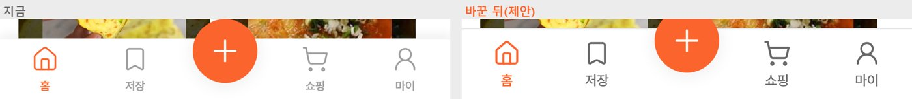
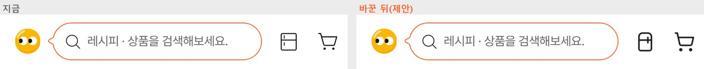
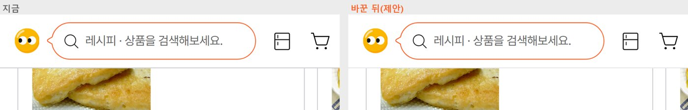
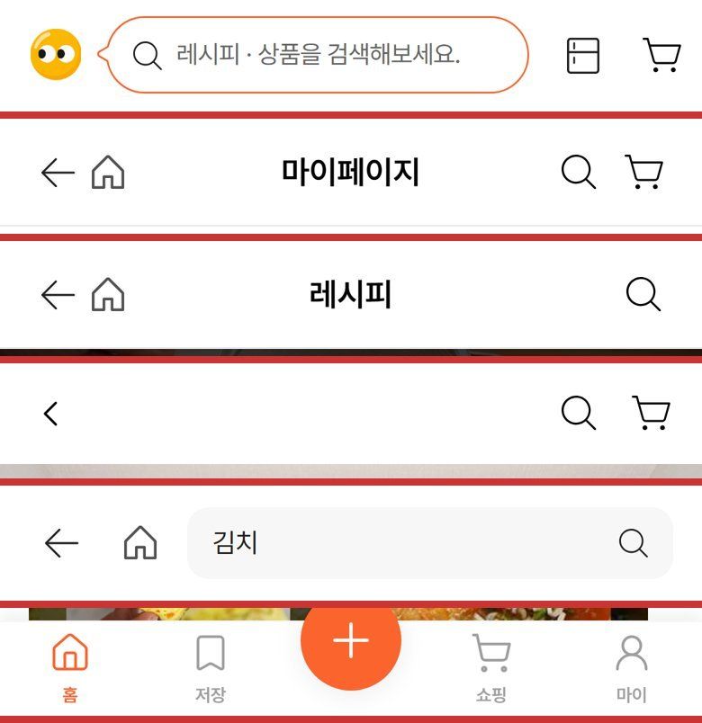
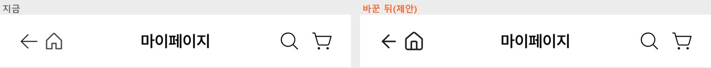
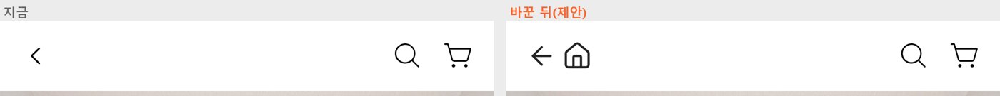

2026.11.10 · 개발 서버 새 판(H3Ifke…)을 휴대폰 화면(390px, 3배 해상도)으로 열어 치수를 쟀습니다. 「바꾼 뒤」 화면은 실제 개발 앱 화면에 제안만 입혀서 찍은 것입니다(서버 데이터는 건드리지 않음). 아이콘은 개발사가 하단 메뉴에 이미 쓰는 아이콘 묶음(lucide)으로 맞췄습니다.
결론
6가지 모두 고치는 게 맞습니다. 3번 「내렸을 때 회색 선」만 동작은 맞고 색이 진합니다.
원인은 대부분 하나입니다. 아이콘이 화면마다 다른 묶음에서 왔습니다. 하단 메뉴는 선 아이콘(lucide), 상단은 채운 모양 아이콘·그림 파일이 섞여 있습니다. 색도 #000·#1F1F1F·#515151·#9E9E9E로 4가지입니다. 「상단·하단 아이콘은 한 묶음, 한 굵기(1.75), 한 색(잉크 #212121)」 규칙 하나로 1·2·4·5번이 같이 풀립니다.
개발사에 보낼 문장은 항목마다 [복사]로 넣었습니다. 화면에 보이는 문제라 버그 시트에 넣어도 되는 항목들입니다.
01. 하단 메뉴 — 글자가 빽빽하고, 아이콘이 위에 붙어 있음
대표님 느낌이 맞습니다. 원인은 글자 사이 간격(자간)이 아닙니다. 자간은 사실상 0이었습니다. 글자가 10px로 작고 굵은데 옅은 회색이라 빽빽하고 흐리게 보이는 것입니다. 그리고 53px 높이에 아이콘이 위 끝에서 6px밖에 안 떨어져 있습니다.
재 본 값
지금
제안
이유
메뉴 높이
53px
62px (+ 아이폰 아래 여백은 지금처럼 따로)
위아래 숨 쉴 자리를 만듭니다.
아이콘 위 여백
6px
9px
메뉴 윗선과 아이콘이 붙어 보이던 것을 풉니다.
글자 크기
10px
12px
우리 가이드의 가장 작은 글자가 12px입니다. 한글은 획이 많아 같은 크기의 영어보다 빽빽해 보입니다(아이폰 기본 메뉴는 10pt지만 영어 기준).
글자 굵기
600(전부)
고른 칸 600 · 나머지 500
작은 글자를 모두 굵게 쓰면 뭉쳐 보입니다. 고른 칸만 굵게 해야 차이가 납니다.
안 고른 칸 색
#9E9E9E(옅은 회색)
#666666(미드그레이)
가이드는 #9E9E9E를 「누를 수 없는 것·안내 글자」에만 씁니다. 메뉴는 누르는 곳이라 미드그레이가 맞습니다.
아이콘 선 굵기
1.5
1.75
12px 글자와 무게를 맞춥니다. 상단 아이콘도 같은 굵기로 갑니다(2·4번).
자간
-0.2%(사실상 0)
0 그대로
작은 글자는 자간을 좁히면 더 빽빽해집니다. 가이드의 -0.3px는 제목·본문용입니다.
칸 간격
5칸 똑같이 78px
그대로
가로 간격은 고르게 나뉘어 있습니다.

왼쪽 지금 · 오른쪽 제안(높이 62, 아이콘 위 9px, 글자 12px·500, 안 고른 칸 #666)
문제 : 하단 메뉴 글자가 10px·굵기 600·옅은 회색(#9E9E9E)이라 빽빽하고 흐리게 보이고, 높이 53px에 아이콘이 윗선에서 6px만 떨어져 답답합니다.
제안 : 높이 62px(아래 안전 여백은 지금처럼 별도), 아이콘 위 여백 9px, 글자 12px(고른 칸 600·나머지 500), 안 고른 칸 색 #666666, 아이콘 선 굵기 1.75로 맞춰 주세요. 자간은 0 그대로 두면 됩니다.
02. 홈 상단 바로가기(냉장고·장바구니) 색
색은 잉크 #212121 하나로 두고, 아이콘을 하단 메뉴와 같은 선 아이콘으로 바꾸는 것을 권합니다. 지금 냉장고는 #1F1F1F, 장바구니는 #000입니다. 둘 다 안을 채운 모양이라 오렌지 테두리 검색창 옆에서 무겁게 보입니다.
오렌지로 칠하지 않습니다. 이 줄의 주인공은 오렌지 테두리 검색창 하나입니다. 아이콘까지 오렌지면 강조가 셋이 되어 아무것도 강조되지 않습니다. 가이드의 「오렌지 = 누르세요(가장 중요한 하나)」와도 맞지 않습니다.
회색(#666)으로 낮추지도 않습니다. 냉장고는 졸리팟의 핵심 기능 입구라, 흐리면 「눌러도 되나?」로 보입니다.
대신 무게를 줄입니다. 같은 잉크색이라도 선 아이콘(굵기 1.75)이면 훨씬 가볍게 보입니다. 하단 메뉴·다른 화면 상단과 같은 묶음이 됩니다.
장바구니에 담긴 개수는 오렌지 동그라미 숫자로 붙입니다. 상품이 있을 때만 보이는 「알림」이라 오렌지를 써도 겹치지 않습니다. 이번 시험 계정 화면에는 개수 표시가 없었는데, 장바구니가 비어 있어서였는지는 확인하지 못했습니다.

왼쪽 지금(채운 모양 #1F1F1F·#000) · 오른쪽 제안(선 아이콘, #212121, 굵기 1.75)
문제 : 홈 상단 냉장고(#1F1F1F)·장바구니(#000) 아이콘이 안을 채운 모양이라 검색창 옆에서 무겁고, 하단 메뉴·다른 화면 아이콘과 모양이 다릅니다.
제안 : 하단 메뉴와 같은 선 아이콘(lucide refrigerator·shopping-cart, 24px, 선 굵기 1.75, 잉크 #212121)으로 바꿔 주세요. 장바구니에 상품이 있으면 오른쪽 위에 오렌지(#FC642D) 동그라미 숫자를 붙여 주세요(이미 있다면 색만 맞춰 주세요). 누르는 영역은 44×44px입니다.
03. 홈에서 내리면 상단에 생기는 회색 선
선이 생기는 동작 자체는 맞습니다. 맨 위에서는 선이 없다가, 내용이 상단 바 밑으로 지나가기 시작할 때 경계를 알려 주는 선입니다. 아이폰 기본 상단 바도 같은 방식입니다. 다만 색이 진합니다. 지금은 카드 테두리용 #CCCFD4인데, 구분선용 #E5E7EB로 바꾸면 됩니다.
지금: 내리면 상단 바 아래 1px #CCCFD4 선이 생깁니다. 이 색은 가이드에서 「카드 테두리」 색이라 선이 도드라집니다.
하단 메뉴와 짝이 안 맞습니다. 하단 메뉴 윗선은 #F7F7F7에 옅은 그림자를 씁니다. 위·아래를 같은 무게로 맞추는 게 좋습니다.
화면마다 다릅니다. 컬렉션 화면은 맨 위에서부터 #CCCFD4 선이 늘 있습니다. 「맨 위에서는 선 없음 → 내리면 1px #E5E7EB」를 모든 상단 바의 규칙으로 정하면 됩니다.

왼쪽 지금(#CCCFD4) · 오른쪽 제안(#E5E7EB)
문제 : 홈을 내리면 상단 바 아래 생기는 선이 카드 테두리 색(#CCCFD4)이라 진하고, 컬렉션 화면은 맨 위에서도 같은 선이 늘 보이는 등 화면마다 다릅니다.
제안 : 모든 상단 바를 「맨 위에서는 선 없음 → 내용이 밑으로 지나가면 1px #E5E7EB(가이드 구분선 색)」 한 규칙으로 맞춰 주세요.
04. 마이·레시피 상단의 홈 아이콘이 하단 메뉴 홈과 다름
통일해야 합니다. 그리고 홈 아이콘만이 아니라 뒤로가기 아이콘도 3종류라 함께 맞춰야 합니다.
어디
뒤로가기
홈
마이페이지 · 레시피 상세 · 검색 · 베스트 · 타임특가 · 주문 내역 · 찜 · 카테고리 · 기획전 (9개)
화살표 그림 파일(back.svg)
채운 모양 집, #515151(가이드에 없는 회색)
상품 상세 · 장바구니 · 냉장고 (3개)
꺾쇠 「<」(lucide, 굵기 1.3)
없음
컬렉션 (1개)
다른 화살표(lucide arrow-left)
없음
하단 메뉴
—
선 아이콘 집(lucide house, 굵기 1.5)
권하는 규칙: 상단 바 아이콘은 하단 메뉴와 같은 lucide 묶음을 씁니다. 뒤로가기는 「←」(arrow-left), 홈은 하단 메뉴와 같은 집(house)입니다. 24px, 굵기 1.75, 잉크 #212121로 하고, 누르는 영역은 44×44px로 둡니다. 「←」을 고른 이유는 이미 9개 화면이 화살표 모양이라 바꿀 곳이 가장 적기 때문입니다.

지금: 위에서부터 홈 · 마이페이지 · 레시피 · 상품 상세 · 검색 · 하단 메뉴. 뒤로가기·홈 모양과 색이 제각각입니다.

마이페이지: 왼쪽 지금 · 오른쪽 제안(하단 메뉴와 같은 집, 같은 화살표, #212121)
문제 : 상단 바 아이콘이 화면마다 다릅니다. 홈은 채운 모양 #515151(하단 메뉴는 선 아이콘), 뒤로가기는 화살표 그림 파일(9개 화면)·꺾쇠「<」(상품 상세·장바구니·냉장고)·다른 화살표(컬렉션) 3종류입니다.
제안 : 상단 바 아이콘을 하단 메뉴와 같은 lucide 묶음으로 통일해 주세요. 뒤로가기 arrow-left, 홈 house(하단 메뉴와 같은 모양), 검색 search, 장바구니 shopping-cart이고, 모두 24px·선 굵기 1.75·잉크 #212121·누르는 영역 44×44px입니다.
05. 상품 상세에 홈 아이콘이 없음
추가하는 게 맞습니다. 상품 상세는 카톡 공유 링크·검색·레시피의 재료 장바구니처럼 밖에서 바로 들어오는 화면입니다. 바로 들어온 사람에게는 뒤로 갈 곳이 없어서, 홈이 유일한 출구입니다. 같은 이유로 장바구니·냉장고·컬렉션에도 홈이 없습니다.
어느 화면에 홈을 둘지 규칙
하단 메뉴 칸 첫 화면(홈·저장·쇼핑·마이): 뒤로가기·홈 없음. 하단 메뉴가 그 역할을 합니다.
그 아래로 들어간 화면: 뒤로가기 + 홈. 레시피·상품 상세, 장바구니, 냉장고, 컬렉션, 검색 결과, 주문 내역 등입니다.
쓰는 중인 화면: 홈 없음, 뒤로가기(또는 ✕)만. 주문서·결제, 레시피 작성·편집, 링크로 만들기입니다. 홈을 잘못 눌러 쓰던 내용·결제를 잃지 않게 하려는 것입니다.
앞 화면 없이 바로 열렸을 때(공유 링크 등): 뒤로가기를 누르면 홈으로 보냅니다.

상품 상세: 왼쪽 지금(꺾쇠만) · 오른쪽 제안(← + 홈, 4번과 같은 아이콘)
문제 : 상품 상세(그리고 장바구니·냉장고·컬렉션) 상단에 홈 아이콘이 없습니다. 상품 상세는 공유 링크로 바로 들어오는 경우가 많아, 뒤로 갈 곳이 없으면 나갈 길이 없습니다.
제안 : 하단 메뉴 첫 화면(홈·저장·쇼핑·마이)을 뺀 모든 하위 화면에 「뒤로가기 + 홈」을 넣어 주세요. 주문서·결제·레시피 작성/편집처럼 쓰는 중인 화면은 홈 없이 뒤로가기(또는 ✕)만 둡니다. 앞 화면 없이 열렸을 때 뒤로가기는 홈으로 보내 주세요.
06. 만들기 — 「직접 만들기」 아이콘 색
이질적인 게 맞습니다. 파란 #3276AE 채운 문서 아이콘인데, 이 파랑은 가이드에서 「링크」 전용 색입니다. 졸리팟 화면 어디에도 없는 색이 큰 아이콘으로 들어가 튑니다. 오렌지 선 아이콘(공책+펜) + 피치크림 바탕 #FFF5EA을 권합니다.
위 칸 「링크로 만들기」: 유튜브 빨강·인스타 색이라 「남의 영상」이라는 뜻이 바로 읽힙니다.
아래 칸 「직접 만들기」: 졸리팟 안에서 내가 쓰는 것이라 졸리팟 색(오렌지)이 맞습니다. 바탕을 피치크림으로 두면 두 칸이 「밖에서 가져오기 / 졸리팟에서 쓰기」로 구분됩니다.
문제 : 레시피 만들기의 「직접 만들기」 아이콘이 파란 #3276AE(가이드의 링크 전용 색) 채운 문서 아이콘이라 화면에서 튑니다.
제안 : 오렌지 #FC642D 선 아이콘(lucide notebook-pen, 선 굵기 1.75)으로, 아이콘 바탕은 피치크림 #FFF5EA로 바꿔 주세요.
같은 화면에서 하나 더: 꺼진 버튼이 흐린 오렌지
링크를 넣기 전 [링크로 레시피 만들기] 버튼이 흐린 오렌지입니다(위 그림). 가이드는 꺼진 버튼을 회색 #E5E7EB 바탕 + #9E9E9E 글자로 정하고, 「흐린 오렌지는 여전히 누르라는 것처럼 보인다」며 금지하고 있습니다.
문제 : 레시피 만들기의 [링크로 레시피 만들기]가 링크를 넣기 전(누를 수 없을 때) 흐린 오렌지로 보입니다.
제안 : 가이드 비활성 버튼대로 바탕 #E5E7EB · 글자 #9E9E9E로 바꿔 주세요.
참고: 이번에 다시 본 것
아이폰 아래 홈 막대 자리(안전 여백)는 개발 앱 스타일에 이미 들어가 있습니다. 메뉴 높이를 늘려도 이 여백은 따로 그대로입니다.
검토 중에 시험 계정 로그인이 만료되자 홈이 「Application error」로 멈췄습니다. 버그 시트 No 9(로그인 갱신 실패)가 새 판에서도 그대로입니다.
jollypot-ui-review-1110-v1 · 기준: 개발 서버 판 H3IfkeIuyECZxhCr8vCNs · 디자인 가이드 v2.0.6